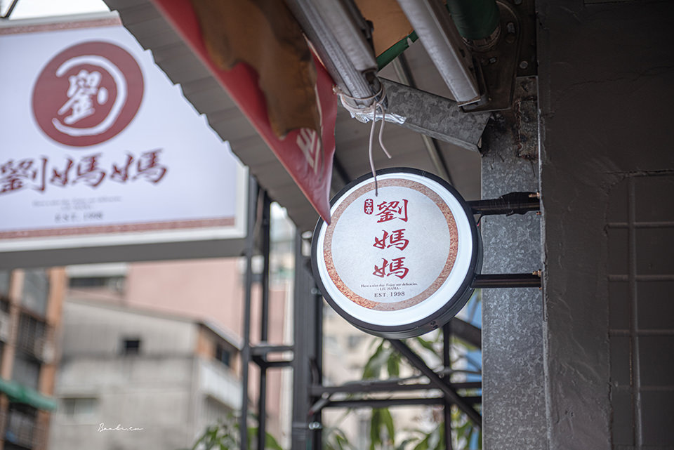
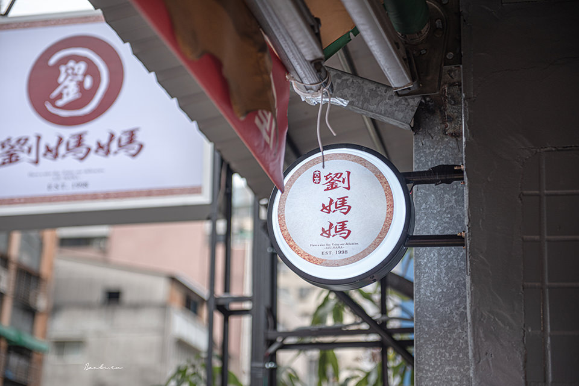
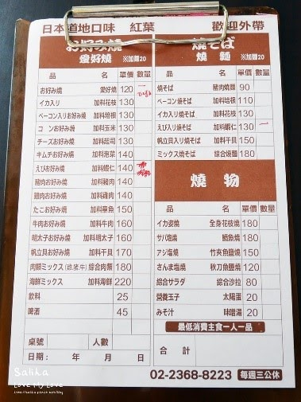
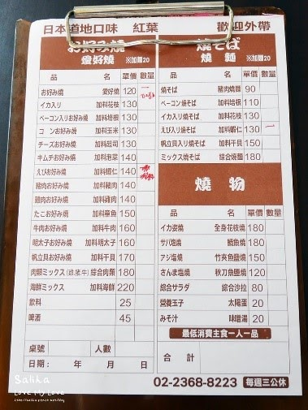

捷運松山新店線美食介紹
捷運古亭站
 

劉媽媽飯糰
店家介紹 📄
傳統的味道，很香很好吃，米飯是用台灣長米，裡面有肉鬆、鹹鴨蛋、菜埔、酸菜、長煎蛋，最特別的是酸菜帶有一點米酒味，不會很濃，飯糰份量超級大，口味也超級多，點一個可以飽到下午都沒問題！有白米跟紫米的，個人喜歡吃混米，不知道要吃什麼就點招牌總匯，這麼大一個才$50真的很划算
店內環境
小攤販
餐點價格 💰
依菜單上為主，幾乎都是銅板價，料多實在。
- 服務方式:內用❌、外帶⭕️、外送⭕️
- 營業時間🕒：早上5:00-早上11:00（星期一公休）
- 地址: 台北市中正區杭州南路二段88號
- 交通🚇:距離古亭站6號出口步行約3分鐘
- Google地圖
- Googl評分:4.2⭐️


蘇杭點心店
店家介紹 📄
從民國四十幾年台北火車站旁，由第一代創始人鄭貴安先生搭棚造爐所賣起的蟹殼黃開始，蘇杭點心店現今已逐漸由第三代接手傳香。 蘇杭點心店正式創立於民國56年，從創始的中山北路一段，到仁愛路四段圓環，而後再於民國88年遷移至現今的羅斯福路二段本店至今，多年來，許多的外國遊客、藝人與政治人物，皆常為其座上賓，各公家部會亦時常訂購蟹殼黃、蘇杭小籠包等作為開會時食用之餐點，年節喜慶壽宴時應景的壽桃、元宵湯圓、湖州粽子、蘇式月餅等，更是饕客熟客們的首選。
古亭很有名的杭州點心店，雖然在地吃的人不多，但是真的蠻有名氣的，甚至不少日本人都會前來朝聖！價位中等，但是份量沒有到很多，所以要吃飽的話可能要花不少錢！湯包類非常受歡迎，小菜的口味也很不錯，鼎泰豐吃膩的話可以試試看這家!
餐點價格 💰
依菜單上為主。
- 服務方式:內用⭕️、外帶⭕️、外送❌
- 營業時間🕒：早上11:00-晚上8:00
- 地址: 台北市中正區羅斯福路二段14號
- 交通🚇:距離古亭站7號出口步行約1分鐘
- Google地圖
- Googl評分:4.0⭐️

吉屋食堂
店家介紹 📄
主食類以日本料理為主，有烏龍麵、丼飯、咖哩飯、定食，另外也可單點炸物、炒青菜、烤物、甜點、小菜 店內採自助式用餐，填寫完菜單後，自行至櫃檯點餐，吃完飯後再結帳餐具、開水等等都是自己拿，所以也就沒有加收一成服務費啦!
店內環境
乾淨、座位距離合適
餐點價格 💰
依菜單上為主。
- 服務方式:內用⭕️、外帶⭕️、外送⭕️
- 營業時間🕒：早上11:30-晚上9:00
- 地址:台北市中正區同安街45號
- 交通🚇:距離古亭站2號出口步行約3分鐘
- Google地圖
- Googl評分:3.7⭐️
 

紅葉日式愛好燒
店家介紹 📄
這家店比較靠近古亭捷運站的九號出口，位置有點隱密，老闆真的是日本人！好吃燒的味道類似大阪燒，口味眾多，記得憑學生證可以加麵，每次來都點一個炒麵、好吃燒、味增湯，日本爺爺的獨門醬汁很棒喔
店內環境
店面小小的位子不多，但格外感到親切。
餐點價格 💰
主打:
🍤蝦仁燒麵$130
🐂牛肉愛好燒$160
🍄杏鮑菇愛好燒$130
🍳太陽蛋$20/顆
價格大概在一百左右
- 服務方式:內用⭕️、外賣⭕️、不外送❌
- 營業時間🕒：晚上5:00-晚上9:00
- 地址:台北市中正區晉江街18巷18弄4號
- 交通🚇:距離古亭站9號出口步行約3分鐘
- Google地圖
- Googl評分:3.9⭐️

巴和奈野 Brunch Cafe'
店家介紹 📄
隱身、巷弄沒有招牌!誕生於2013年初夏的巴和奈野迷人的咖啡香帶來最初的感動~我們的用心您看得見 health（健康）：義大利illy香醇咖啡、純淨天然的有機新鮮蛋、新鮮爽脆的進口生菜以及口感極佳的美國脆薯，都是奈野咖啡為了讓您擁有最健康的用餐條件，堅持提供的嚴選素材，每一口都有我們的用心，只期望看到入口後滿足微笑的神情。
店內環境
原木裝潢、開放式吧檯、日本鄉村風，提供典雅舒適用餐環境。
餐點價格 💰
依菜單上為主。
- 服務方式:內用⭕️、外帶⭕️、外送⭕️
- 營業時間🕒：早上8:00-下午5:00
- 地址:台北市大安區羅斯福路二段81巷16弄5號
- 交通🚇:距離古亭站2號出口步行約3分鐘
- Google地圖
- Googl評分:4.0⭐️